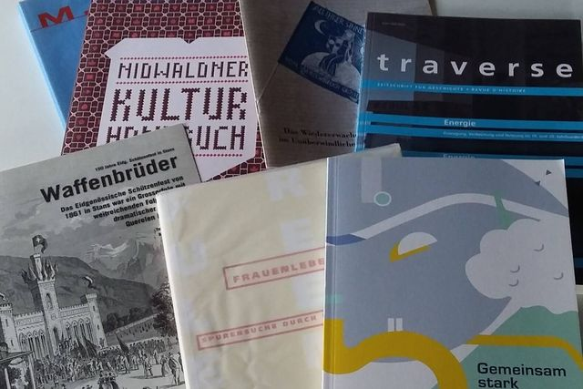
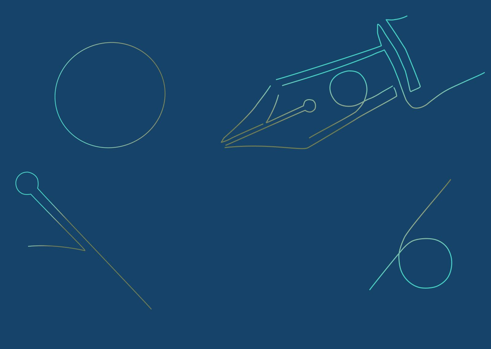
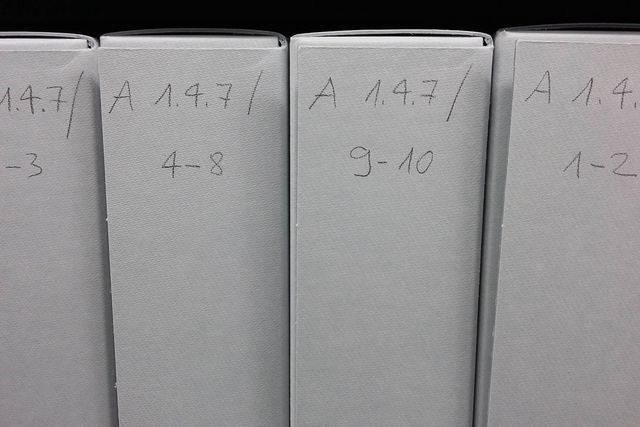

Textarbeit
- Journalistische Texte
- Broschüren und Webseiten
- Wissenschaftliche Texte (Geschichte)
- Politische Kommunikation
- Redaktion und Lektorat

Textarbeit, Geschichtsvermittlung und Archivierung aus einer Hand. Karin Schleifer — Historikerin, Autorin und wissenschaftliche Archivarin.
Verständliche, punktgenaue Texte für Ihr Zielpublikum
Attraktive und spannende Geschichtsvermittlung
Ordnung statt Chaos im Archiv
Inhaberin und Geschäftsführerin
Seit 2016 führe ich die Skriptorium GmbH in Stans. Als Historikerin, Autorin und wissenschaftliche Archivarin verbinde ich den präzisen Umgang mit Sprache mit fundierter Recherche — für Texte, die verstanden werden, für Geschichte, die Menschen erreicht, und für Archive, in denen sich wieder etwas finden lässt.
Das Handwerk der Aktenführung und Archivierung habe ich ab 1999 im Staatsarchiv Nidwalden von der Pike auf gelernt. Seit 2006 arbeite ich im Vorstand des Historischen Vereins Nidwalden mit, und während zwanzig Jahren engagierte ich mich in der Nidwaldner Kulturförderung.
Ob ein einzelner Text, ein Kulturprojekt oder ein ganzes Archiv: Sie erhalten die Arbeit von jemandem, der sowohl schreibt als auch erschliesst.


Erzählen Sie mir kurz, worum es geht — ich melde mich zurück und wir klären gemeinsam, was sinnvoll und machbar ist.